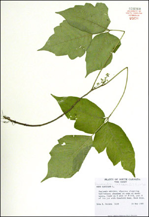
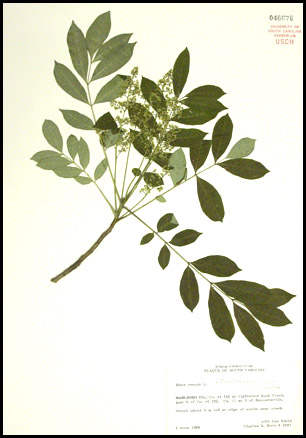
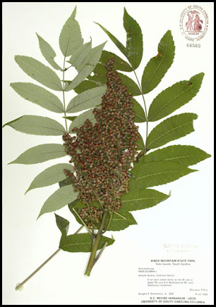

POISON IVY:
Aren't you itching to know all about it?

South Carolina has 46 counties, and every one of them has plenty of poison ivy.
This is a species known as Toxicodendron radicans, a member of a mostly tropical
plant family, the Anacardiaceae, that provides us with cashews and
mangoes. Poison ivy vines commonly grow high into trees, if given sufficient time.
The branches of this deciduous vine produce dark, shiny green leaves, which are slightly
paler on the lower surface. Poison Ivy is characterized by leaves that are referred to
as trifoliolate, which means that a single leaf is divided into three definite segments
which we call "leaflets". The leaves frequently turn an attractive bright orange or even
red in the fall. The vines produce small, yellowish flowers that ultimately form small,
whitish berries in the autumn.
The stems of poison ivy are most likely to be climbing. The plants are usually woody
vines, and very old ones can be more than an inch in diameter. Frequently, the climbing
stems produce a woolly growth of pale brown roots, which enable the vine to better hold
onto the tree upon which it is climbing. These roots make the vines rather easy to
identify in the winter, after all the leaves have fallen. WARNING: on some plants,
the climbing stems may have few of these clinging roots, so identification may be a
problem! In addition, some other plant species also have these roots on their stems.
Poison ivy is of concern to humans because of certain irritating compounds,which are
concentrated in the oil and sap that the plant produces. Oil is regularly found on thousands
of tiny glands on the leaf surface, and whenever a hiker, camper, or gardener runs into the
leaves, the glands are ruptured, quickly releasing the oil onto the skin. The sap of the
plant also contains these irritating compounds, which makes the broken stems and torn leaves
good sources of the problematic substances.
In winter condition, poison ivy vines lose all their leaves, being deciduous. Although there
are no glands thus available for contact with skin, rubbing against the branches may still
elicit an immune response and resultant rash. Irritating oils may become windborne, especially
if the stems are burned (for instance, when a lot is being cleared). Inhaling such smoke
has been known to cause serious reactions.
On human skin, these compounds elicit an immune response, which may result in intense itching,
reddening, and possibly blistering of the affected area. Different individuals have widely
variable susceptibilities, and some people seem fortunate enough never to worry about "getting"
poison ivy, even though they spend a lot of time in the woods. Painful rashes may be a result of contact with poison ivy, and on some persons, the rash may remain for weeks. In many
cases, a dermatologist must be consulted for care.
All individuals who are susceptible to outbreaks of poison ivy should always take appropriate
prevention methods. Trousers, long-sleeve shirts, gloves, and liberal applications of poison
ivy preventatives, available in drug stores, should be employed. In addition, those who are
susceptible and who have spent time outside in areas where the plants grow should bathe as
soon as possible after outdoor activities, in order to remove any oil on the skin that may
have been picked up.
Despite its fierce reputation, there are aspects of poison ivy that should be kept in
mind, aspects alluding to its proper place in our environment:
- Poison ivy is a native species.
- Its berries are an important source of food to a number of bird species.
Warning: the berries, if eaten, may cause extreme irritation to
humans.
- Certain wildlife species also use the foliage as a source of food.
|
|

Poison sumac (Toxicodendron vernix) forms a small, slender tree. Its leaves, rather than having three separate leaflets, each have up to a dozen (or more) sharp-pointed leaflets arranged along a stalk, much like a feather. In South Carolina, poison sumac is usually found in damp woodlands or shrub thickets in the sandhills or coastal plain, although it is sometimes encountered in the mountains. Unlike poison ivy, poison sumac is generally not found growing in towns or residential areas. However, some people consider poison sumac to be more dangerous than poison ivy. Susceptible individuals should be able to recognize this plant, if they intend to be in the out-of-doors.
|
|

Smooth sumac (Rhus glabra) is not considered a poisonous plant, except in highly susceptible individuals. Though it belongs to a slightly different genus, it is still considered a close relative of poison ivy.
It produces a compact, stocky shrub with glossy green, compound leaves. The leaves are somewhat similar to those of poison sumac, and its closer relative "winged sumac" (Rhus copallina). Both smooth and winged sumac produce fuzzy, red berries (which when cleaned off, can be crushed with sugar and ice, then strained, making a passable lemonade). Both of these shrubby sumacs are common along roadsides and field margins in South Carolina. Smooth sumac is most common in the piedmont and mountain counties, while winged sumac is known from every county.
|